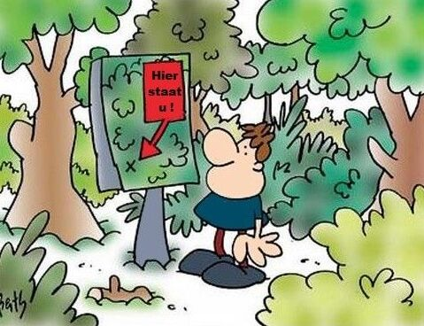

Door de Bomen het Bos niet meer zien
"Door de bomen het bos niet meer zien" wordt gebruikt om aan te geven dat iemand het overzicht kwijt is, meestal door te veel details of opties. Het verwijst naar het verliezen van het totaalbeeld door te veel gefocust te zijn op kleine onderdelen.
Oorsprong
De oorsprong van dit spreekwoord dateert uit de tijd dat mensen verdwaald raakten in dichte bossen. Het idee is dat wanneer je te veel opgaat in het observeren van individuele bomen, je het grote geheel, het bos, uit het oog kunt verliezen.
Gebruik
Dit spreekwoord wordt vaak gebruikt om aan te geven dat iemand verstrikt raakt in details en daardoor het overzicht verliest. Het wordt zowel in formele als informele contexten gebruikt.
Voorbeelden
- Na al die grafieken en cijfers zag ze door de bomen het bos niet meer en moest ze even een pauze nemen.
- Hij raakte verloren in de discussie en kon door de bomen het bos niet meer zien.
Vertalingen
Hoewel dit spreekwoord specifiek is voor de Nederlandse taal, zijn er vergelijkbare uitdrukkingen in andere talen. In het Engels wordt soms gezegd: to not see the forest for the trees (het bos niet zien door de bomen).